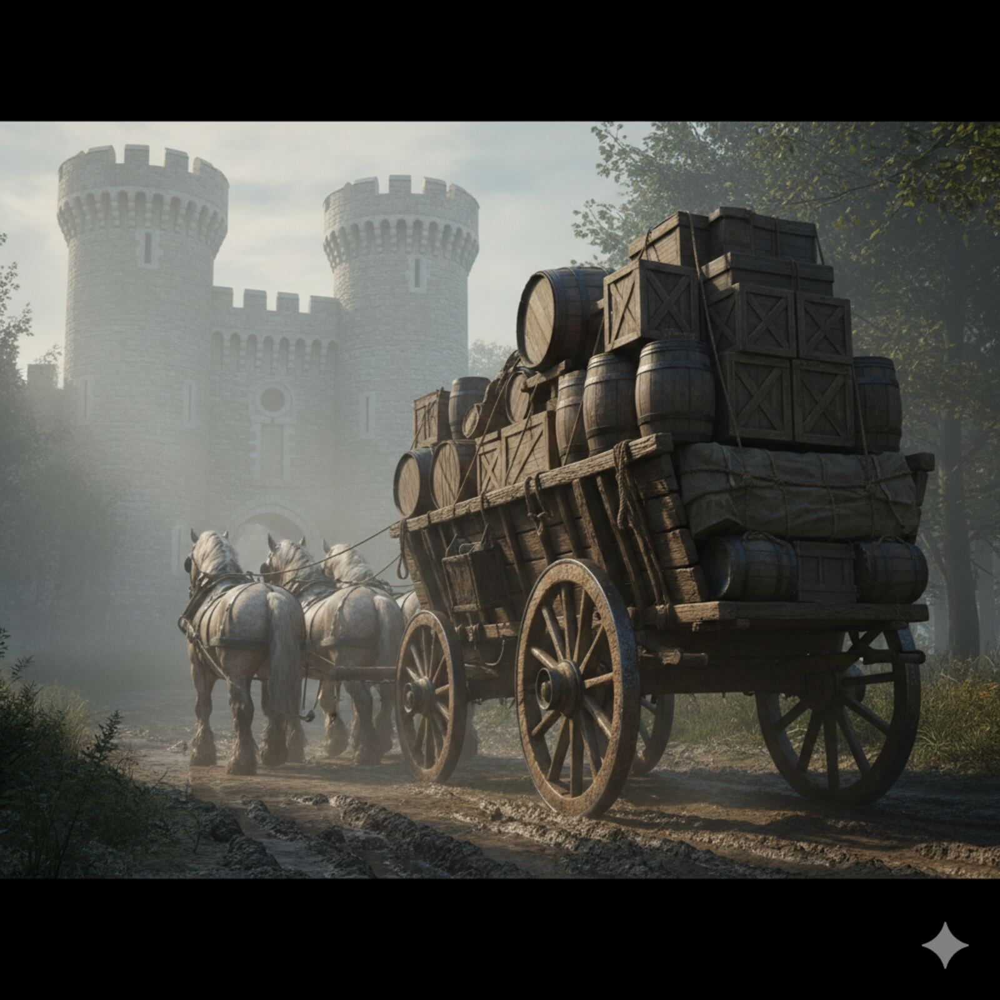

MEDIEVAL WAGON JOURNEY
OVERVIEW
Environment art study built as a curatorial exhibit piece — testing modular kit construction from historical source material as a scalable production methodology.
A high-fidelity narrative environment depicting a medieval wagon journey along Hadrian's Wall. Modular kit construction from 14th-century wagon plans, full PBR texturing pipeline from Blender to Substance Painter to Unreal Engine 5. The project treated environment art as historical storytelling — the scene had to feel as though it recorded something that happened, not as though it illustrated something imagined. Every asset was built from documented source material; every surface material was developed to carry the evidence of use.
PROCESS
01
RESEARCH
Primary research was conducted into 14th-century wagon construction using historical records, museum collections (including the Science Museum's transport archive), and academic texts on medieval transport and road infrastructure. Hadrian's Wall topography and the surrounding landscape of the Northumbrian uplands were studied through Ordnance Survey data and contemporary photography to establish an accurate environmental context for the scene.
02
ASSETS
Wagon components were modelled individually from historical reference — wheel construction (mortise and tenon spoke joinery, iron tyre bands), axle systems, load-bearing superstructure, and period-appropriate cargo. Each element was built to function as a modular kit piece, proportioned and detailed to remain credible at different camera distances — from environmental background to close-up hero shot without resolution breakdown.
03
ENVIRONMENT
Full scene assembly in Unreal Engine 5 placed the wagon on a reconstructed section of Hadrian's Wall environs with volumetric atmospheric lighting suggesting an overcast northern sky. PBR materials across all surfaces — weathered oak, worked iron, rough-hewn Roman stone, windswept upland grass — were developed to contribute to a coherent sense of material truth. Lumen global illumination handled the soft, directionless light characteristic of clouded northern latitudes.